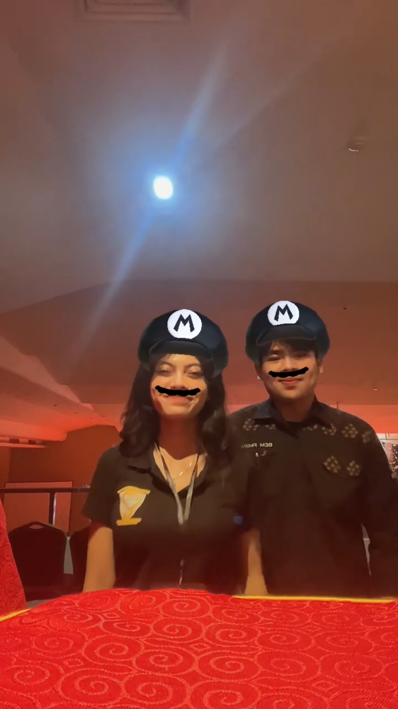
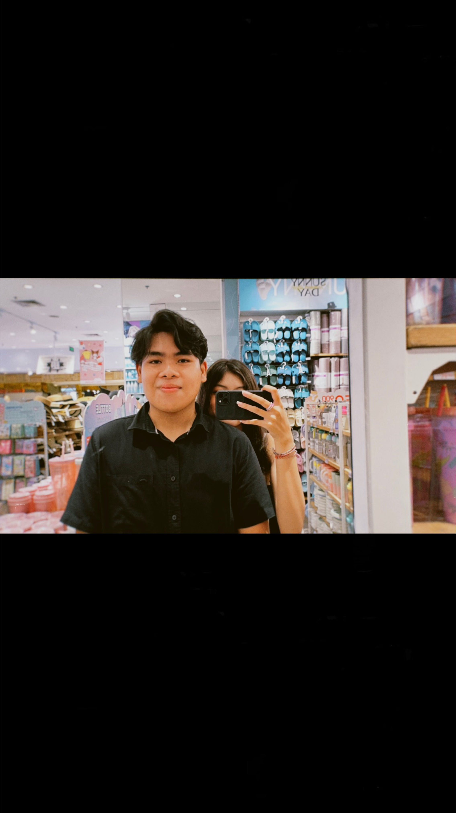
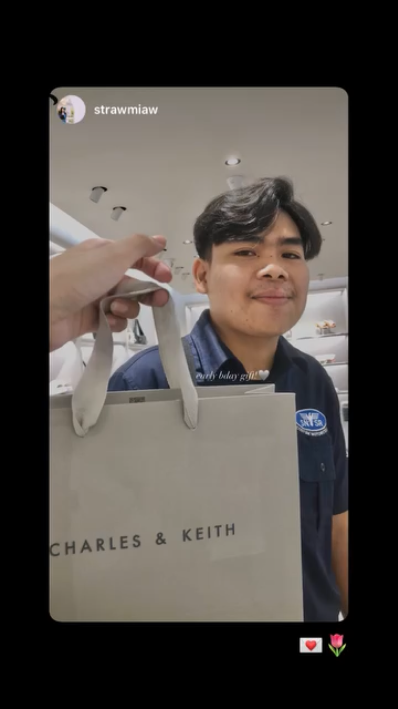
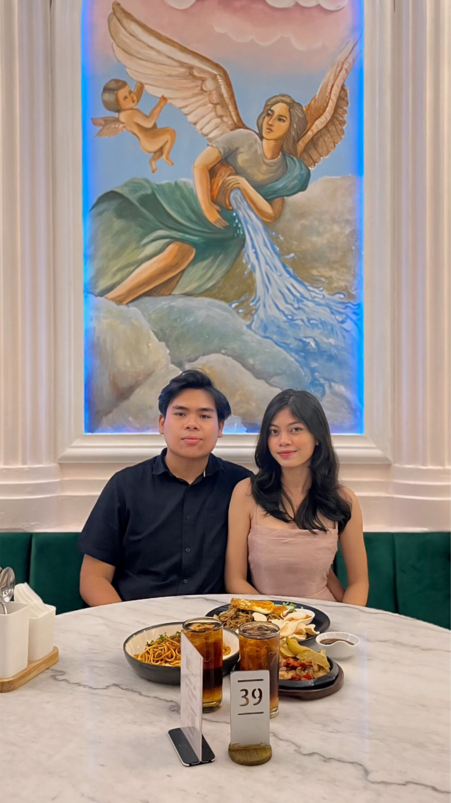

A year ago, we began this extraordinary journey together. I never imagined that I would find someone like you, someone who could fill every corner of my heart with so much love, happiness, and warmth. Along this journey, which hasn’t always been smooth, you have always been my reason to smile, to stay strong, and to keep believing that true love does exist.
Every day with you is a blessing that I am deeply grateful for. Not just because of the beautiful moments we've shared, but also because of all the challenges we’ve overcome together. Every laugh, every hug, every conversation, even those quiet moments when we just sit side by side without saying a word, they all mean the world to me. Even in silence, I can feel how deep the love we share truly is.
Thank you for always supporting me, for always seeing the best in me, even in the moments when I felt incapable. You have taught me the meaning of patience, understanding, and sacrifice. With you, I’ve learned that love is not only about happy moments, but also about how we stand together through everything, in both sadness and joy.
This past year, we haven’t only learned to love each other, but we’ve also learned to understand, accept, and embrace all the imperfections and strengths we each have. Our love may not be perfect, but I know it is real and sincere. You make me feel unconditionally loved, and I promise I will always do my best for you, for us.
I can’t wait to see what the coming years will bring us. I know there’s still a long journey ahead, and it may not always be easy. But as long as you are by my side, I’m confident that we can face it all with courage and an ever-growing love.
Thank you, my love, for the laughter, patience, and everything we've shared over the past year. You are the most important part of my life, and I can’t imagine living without you. I love you with all my heart, today, tomorrow, and always.
Let’s keep nurturing and protecting this love, walking through whatever comes our way together. Because with you, I feel complete. And I know our love is worth fighting for.
I love you so much bibubb, more than words could ever express. Let’s take a moment to look back at the beautiful memories we've created over this past year.
First Photo You Took

Our first journey began on a beautiful day...
We Meet Again!

We meet and I give you a cute keychain...
First Time at Beach

I was so happy when you took me to the beach for the first time :)
Our First Sunset

That sunset was literally gorgeous, just like you
Lift Mirror Selfie!

I was so happy because we got to meet, eat together, and you looked absolutely beautiful.
Our First Dinner

I was thrilled to see you again that night, especially after a long day of being an operator
First TikTok Dance!
I had so much fun making TikTok dances with you that day!
The Best Love Letter

The letter I received that day was a huge morale booster for me during the tournament
Very Cute Photo

We met again before the finals, and once again, you were my biggest motivation. In the end, I took first place!
Our First Movies

I was so incredibly happy, it was our first time going to the movies, and you looked absolutely stunning
Ina's Day

I felt honored to be a part of the celebration, sharing in the joy of your friend's special day alongside you
PIMNAS Struggle

I’m torn because I’m really sad you’ll be away for a week, but at the same time, I’m so happy I could be by your side as you reached the PIMNAS stage
Very Cute Rings!

I swear, I’m so happy! Even with how busy you are, you still found time to buy something cute for me, and I absolutely love it
J.CO Timee!

You came all the way to campus and took me to J.CO that day. You’re always my cure for exhaustion. I love you so much, bibubb
First Sushi With You

That was the first time I ever had sushi in my life, and I’m so happy my first time was with you
Our First Photobox!

I was so happy the first time we did a photobox together. We wore matching outfits, and you looked absolutely beautiful
My Favorite Photo
This is one of my favorite photos because I always wanted to recreate that Spiderman pose, and I’m so happy I got to do it with you!
You Were Driving

That day was so much fun with you driving me, bubb. We had lunch together, and I was just so happy
My First Hotways

That day was so much fun. I got to take you to eat Hotways and street-side meatballs, and we explored Denpasar together before heading home
Your Birthday Gift
I'm so happy I could give you a birthday gift, even though it’s simple, I hope it makes you happy. This is the first time I’ve celebrated your birthday with you
Happy Birthday!!

I was overjoyed to see you truly happy that day, my plan to surprise you succeeded, you looked absolutely stunning, and your smile was breathtakingly beautiful. Happy Birthday, Bibubb!.
Sweet Dinner

I was so happy that night to have dinner with you before I left for Bekasi. You looked beautiful, sweet, and graceful
This is My Birthday!
My feelings were all mixed up between happiness and being touched that night. I realized I have a beautiful woman who celebrates me. I was so happy to be celebrated by you
Sweet Dinner Part 2

Thank you so much, bibubb, for the celebration that night. We had dinner together, and you gave me so many gifts. I love you so much bibubb 🤍
Our Matching Shoes

This is the first time I have matching shoes with you, and I’m so happy, bubb. Let’s buy matching shoes again sometime!
Internship Exam

That day, I was so surprised, Bubb! I couldn't believe you had the time to bring me flowers for my internship exam. I was so happy, bubb! Thank you for always celebrating me!
Last Mall Date

I'm so sad we’ll be doing KKN for over a month and won’t get to see each other often. I even cried. But that day, I was so happy we got to go on a date before KKN. You looked absolutely beautiful that day, bubb!
I Came to See You

That was the day I had been waiting for during KKN. I finally got to see you, bubb. I was so happy to meet my beautiful woman
Your Effort

Honestly, I felt bad letting you travel nearly 90KM to see me, but I was so happy we could meet again during KKN. We spent 4 days together, and it was amazing :)
Our First CFD

Even though we just walked around and stopped by a few places to eat, I was so happy to spend time with you and see you often
The Best Movie

That was the best movie we’ve ever watched together, in my opinion. I loved the film, especially because I got to watch it with you, who looks beautiful every single day!
Couple Outfit

I absolutely love our couple outfit, especially because it has Spiderman on it—I’m such a huge fan. That was the first time you wore that in front of me, and I was so happy. and you looked stunning
Best Holiday!

That day was so much fun with you, bubb. Even though we didn’t try all the rides, I was so happy. We took so many photos and had amazing moments together. I was incredibly happy that day, my love